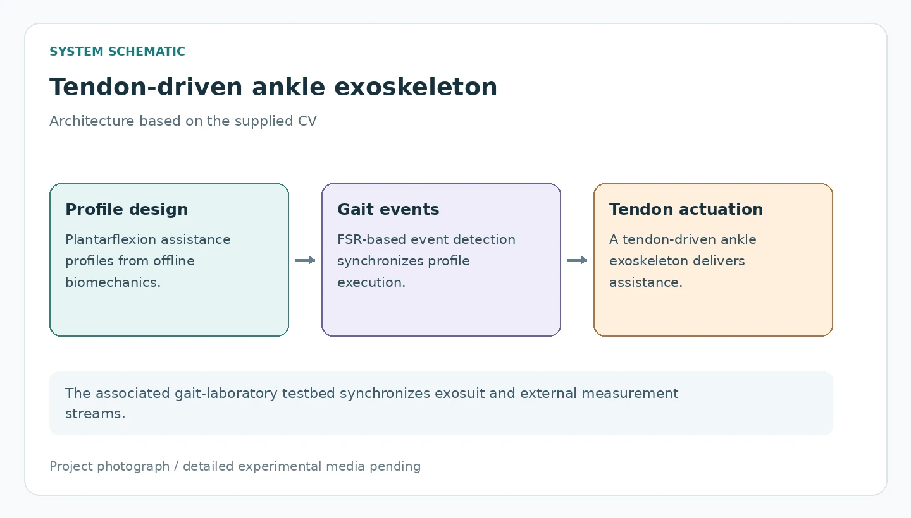
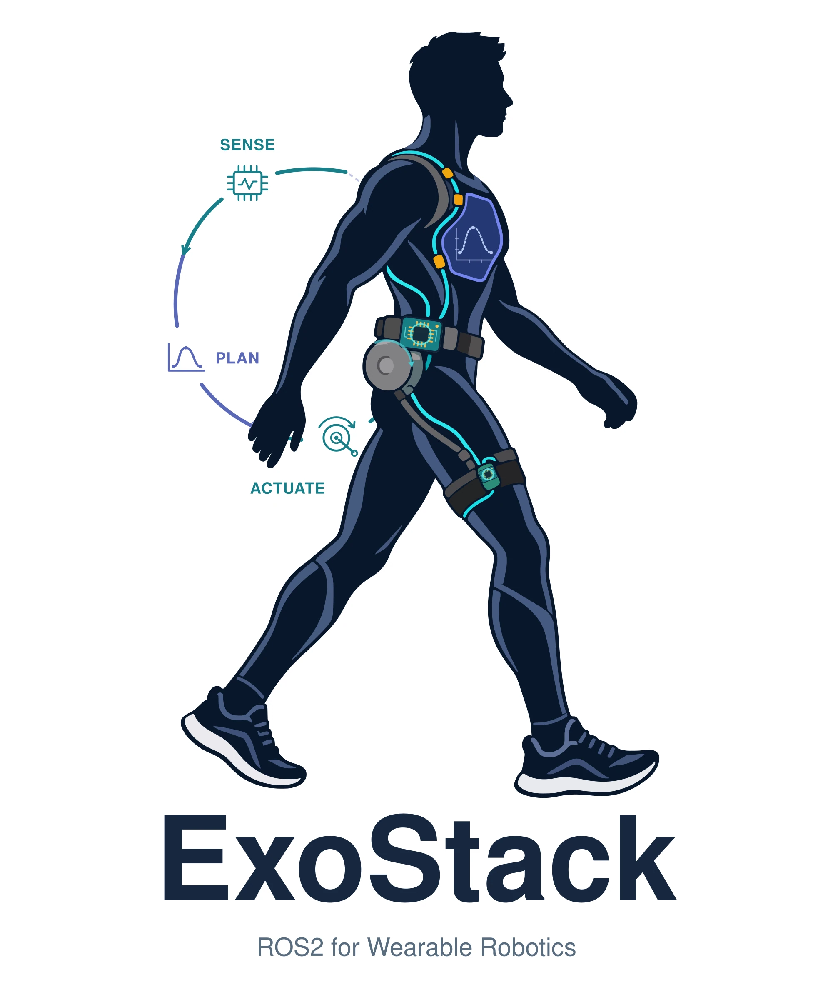

Research platforms
Ankle Assistance & Gait Laboratory
Tendon-driven plantarflexion assistance and a synchronized human-in-the-loop testbed
Wearable robotics/September 2024 – January 2026
Integrated upper-limb assistance with biosignal-based admittance control
Indian Institute of Technology Delhi · Department of Applied Mechanics
The project
At IIT Delhi, I led full-stack development of a tendon-driven elbow-flexion exosuit within a DRDO-funded upper-limb augmentation project. The work covered mechanical design, tendon transmission, sensing, fabrication, and embedded control on an NVIDIA Jetson, connecting a wearable mechanism to a complete experimental control system.
Biosignal-based admittance control provided gravity compensation and was tuned through load-lifting trials. The architecture shown here summarizes the scope documented in my CV. Authentic hardware media, the exact biosignal and control formulation, and quantitative experimental outcomes will be added after the project details are confirmed.
Mechanical design and fabrication
The exosuit transmits assistance through a tendon-driven mechanism for elbow flexion. My work joined the wearable mechanical design to the transmission, sensing provisions, and fabricated components, so that the force-delivery route could be integrated with the rest of the system.
The explanatory diagram identifies these functional relationships at the level supported by the CV. Exact actuator placement, tendon routing, attachment geometry, and measured transmission behavior are pending project-specific material; the diagram does not claim a reconstructed view of the physical prototype.
Jetson-based admittance control
The embedded control system runs on an NVIDIA Jetson and integrates wearable sensing with biosignal-based admittance control. In the reported project scope, this controller provides gravity compensation and supports upper-limb power augmentation during load-lifting activities.
Admittance control provides the organizing control concept, while the exact measured biosignal, signal-processing pathway, feedback variables, and controller equations await a dedicated methods description. These details will determine how the user’s input and the assistance command should be shown in the final control diagram.
Integration and controller tuning
Load-lifting trials provided the setting for tuning the integrated exosuit. This stage connected the mechanical transmission, wearable sensing, and embedded controller under a physical task, following the full-stack development described in the CV.
The trial protocol, participant details, loads, recorded signals, and quantitative outcomes have not yet been supplied for this portfolio. Those materials will turn this architecture-level account into a detailed experimental case study, alongside photographs or short clips of the actual setup.
Connected work
This project is described in the supplied CV. A dedicated publication or technical report can be linked here when available.
Read CV project summaryAdd authentic elbow-exosuit hardware, tendon-routing, and load-lifting media, with any project-specific display restrictions.
Confirm the biosignal modality, sensing layout, admittance formulation, gravity-compensation implementation, and permissible technical detail.
Provide the load-lifting protocol, measurements, quantitative outcomes, and any associated publication or report.
Keep exploring

Research platforms
Tendon-driven plantarflexion assistance and a synchronized human-in-the-loop testbed

Wearable robotics
Sensorized pneumatic muscles and rapid personalization for bilateral knee-flexion assistance

Research platforms
A modular ROS 2 architecture for deployment and human-in-the-loop experimentation